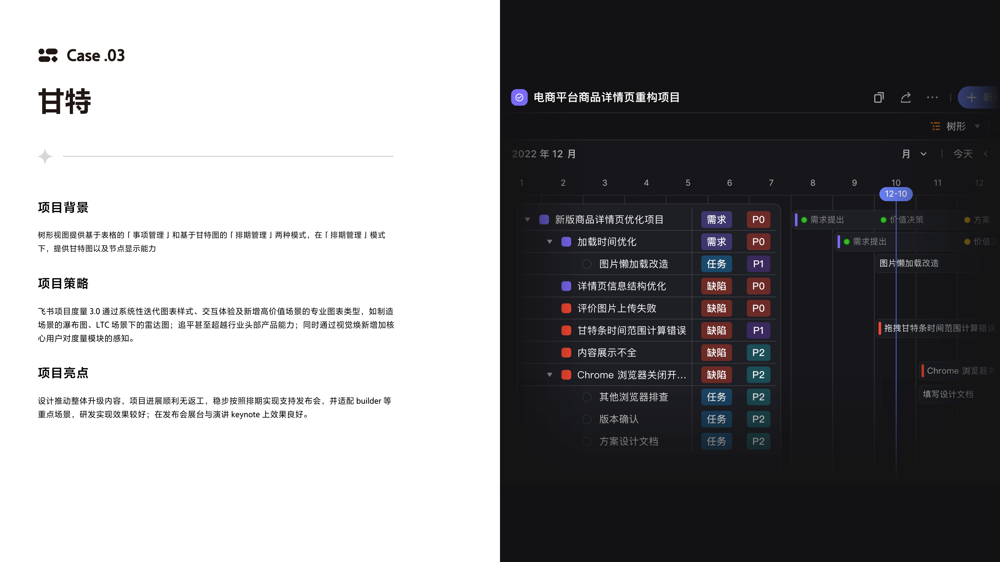
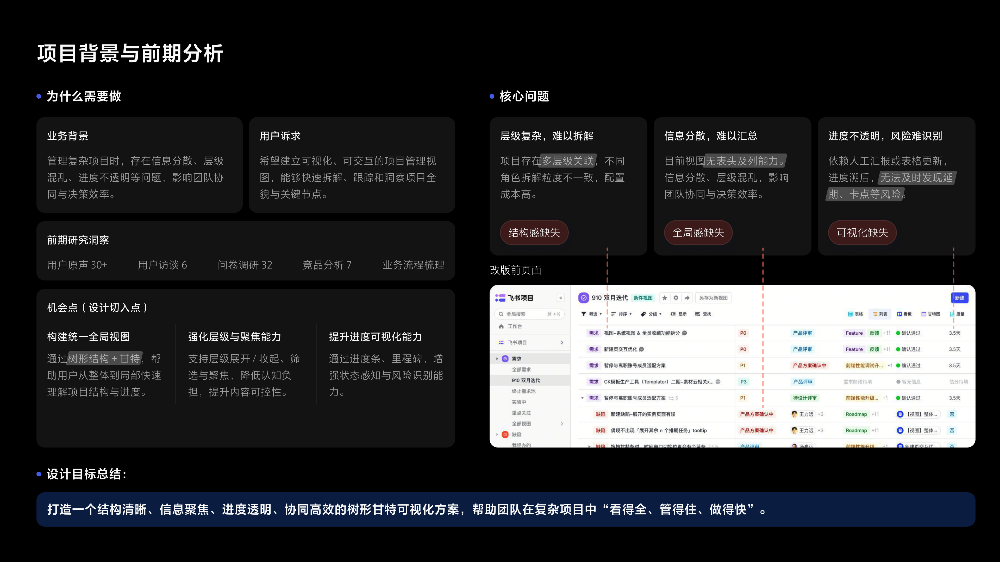
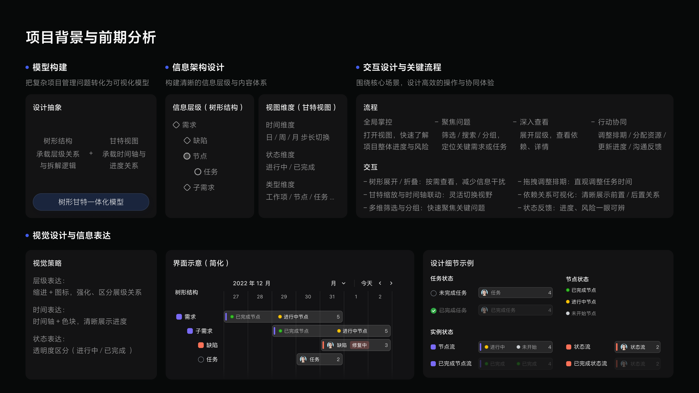
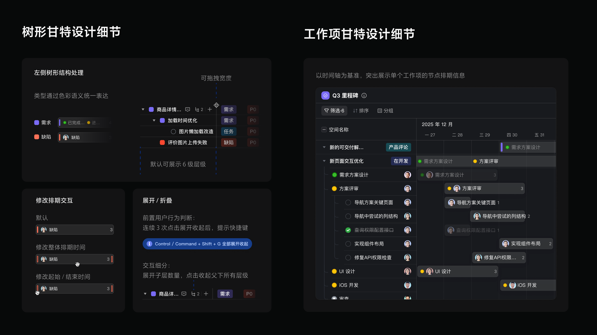
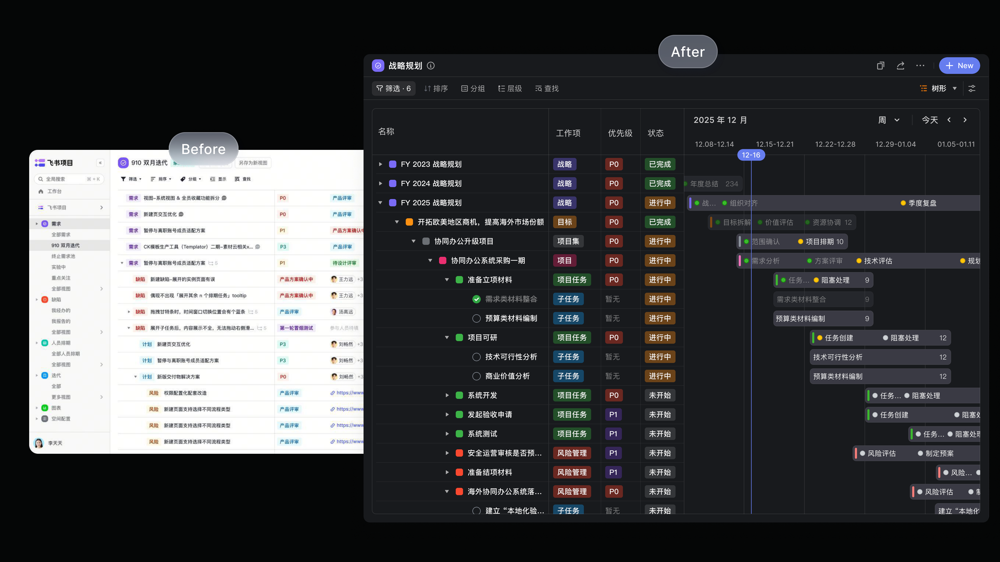
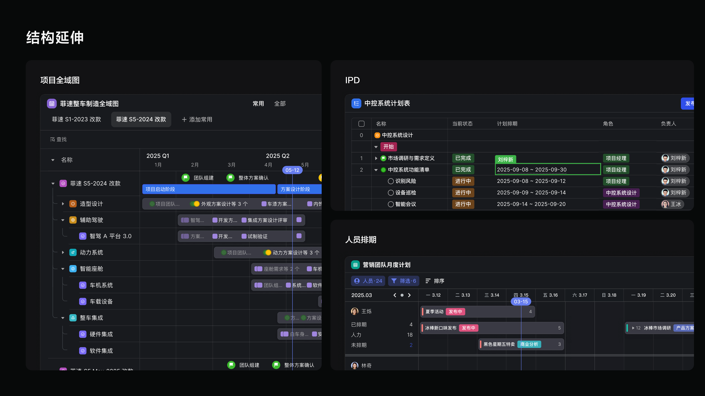

设计目标
保留树形层级，引入甘特时间轴，同时回答「项目由什么构成」和「这些内容何时发生」。
Case 03 / Complex B2B
树形甘特：在复杂层级项目中同时表达工作项结构、排期、状态与责任，并沉淀可复用的甘特底层模型。
项目背景
甘特能力帮助用户理解项目排期、任务依赖、人员安排和整体进度。难点在于项目管理数据本身复杂：需求、缺陷、任务等工作项类型不同，节点流、状态流、子任务、负责人和时间排期交织在一起。

问题定义
原有树形视图主要有三类问题：不同工作项字段横向不一致，列含义难对齐；用户能看到层级，却看不到时间轴上的整体排期；结构查看和排期调整需要来回切换，效率不足。

保留树形层级，引入甘特时间轴，同时回答「项目由什么构成」和「这些内容何时发生」。
通常由多个流程节点构成，重点关注阶段推进和节点状态。
缺陷更接近状态流，任务更轻量，两者需要在图形表达上清晰区分。
结构模型
左侧树形结构负责表达层级关系和基础信息，右侧甘特区域负责表达时间、进度和排期关系。用户可以只看树形，也可以打开甘特做排期分析，并在当前视图内完成筛选、展开、定位和拖拽调整。

设计细节
左侧用 Icon 与颜色区分工作项类型，比 Tag 更节省空间，也更适合高密度场景。任务勾选、节点状态色与右侧甘特条颜色线索保持一致，帮助用户快速建立结构与排期的对应关系。


模型复用
这个项目最终沉淀为一套通用甘特模型：右侧时间轴和甘特交互保持统一，左侧根据业务场景切换不同结构。树形甘特、工作项甘特、项目全景、IPD 阶段和人员排期都可以复用同一套底层能力。
